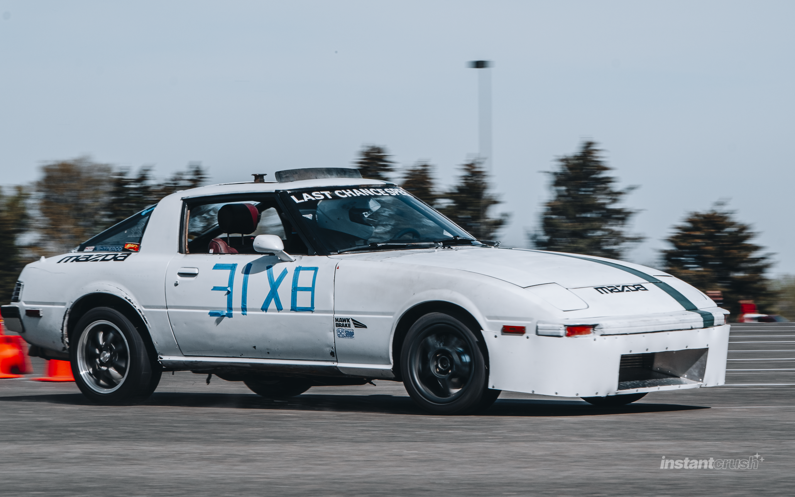
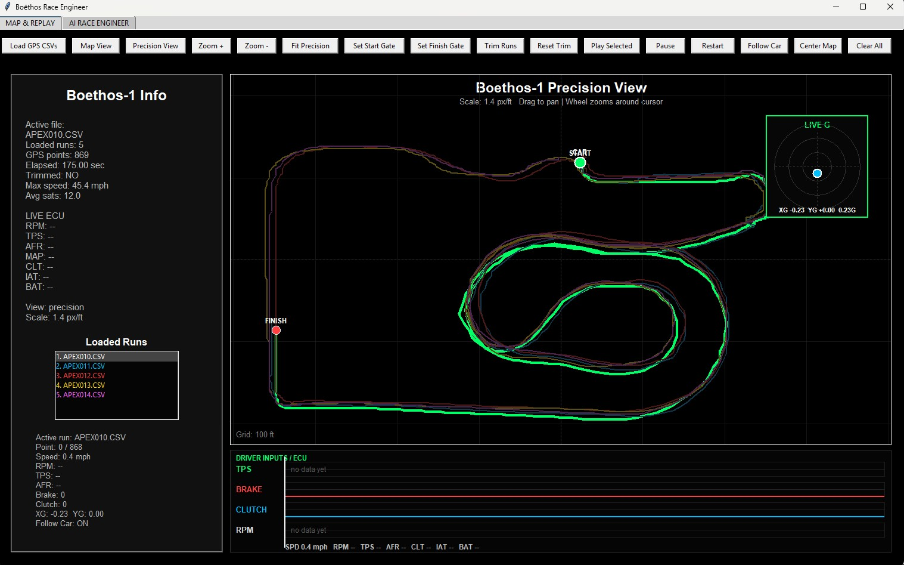

Last Chance Speed Co.
Drive. Build. Repeat.
Drive. Build. Repeat.
A compact grassroots motorsport logger for GPS data, IMU movement, Bluetooth setup, microSD recording, and Boēthos software analysis.
View Development Status
ERX-L was created to give grassroots drivers useful data without needing a professional race engineering setup. The goal is simple: record the run, understand the car, and make better decisions from real information.
Most grassroots drivers make setup changes based on feel alone. Feel matters, but data helps confirm what the car actually did. ERX-L is being developed around real autocross testing, real hardware limitations, and real driver needs.
It is not meant to replace the driver. It is meant to help the driver see the run more clearly after the helmet comes off.
Position, speed, course mapping, start/finish gates, and sector points.
Acceleration, braking, rotation, and movement data for run analysis.
Phone app connection for setup, course points, and run management.
Run data is recorded locally for review, storage, and future analysis.
Built to work with the Boēthos driver review and data analysis software.
Internal rechargeable Li-ion power for simple installation and quick setup.
ESP32-S3 based development platform used for ERX-L firmware and product validation.
High-rate GPS receiver for position, speed, course mapping, and gate detection.
IMU sensor package for acceleration and rotational movement data.
microSD card logging with removable storage for post-run review and analysis.
Bluetooth communication for phone app setup and course configuration.
Internal rechargeable Li-ion battery designed for simple portable use.
Position, speed, heading, start gate, finish gate, and sector tracking.
Lateral acceleration, longitudinal acceleration, and rotational movement recording.
CSV-based logging compatible with Boēthos analysis software and spreadsheet tools.
Bluetooth transfer of start, finish, and sector locations from the companion phone app.
LEDs for logging state, GPS lock, Bluetooth connection, and system status.
No vehicle wiring required for basic logging. Charge, mount, connect, and record.
Prove reliable GPS, IMU, microSD logging, Bluetooth connection, phone app setup, and course gate workflow.
Expanded logger platform for drivers who need more system input, deeper integration, and additional hardware capability.
Professional logger platform planned for higher-end motorsport data, expanded sensors, and deeper Boēthos integration.
Current ERX-L hardware used for testing and development.

Developed and tested through real-world competition.

Software tools for course setup, run review, and data visualization.
Charging, GPS lock, Bluetooth connection, and first log process.
Mounting, app connection, course points, and logging workflow.
Firmware versions, update notes, and downloads will be added here.
ERX-L is currently in development with local testing and validation as the next step.
Email: LastChanceSpeedCo@outlook.com